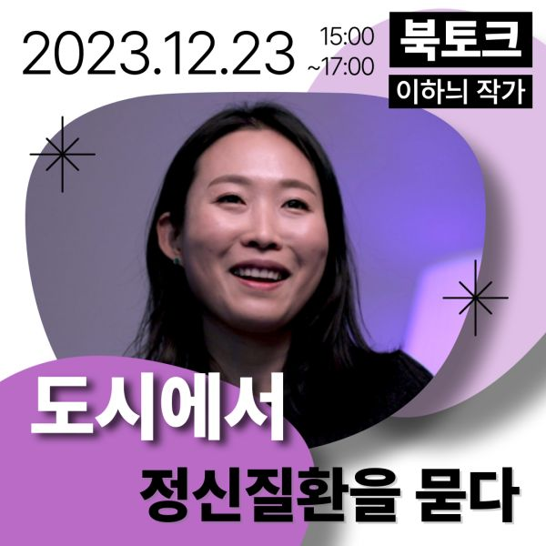
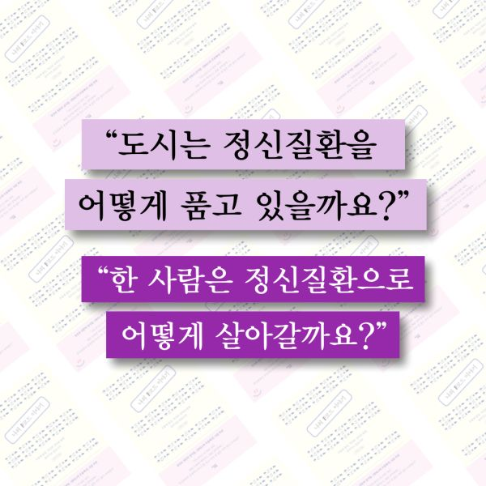
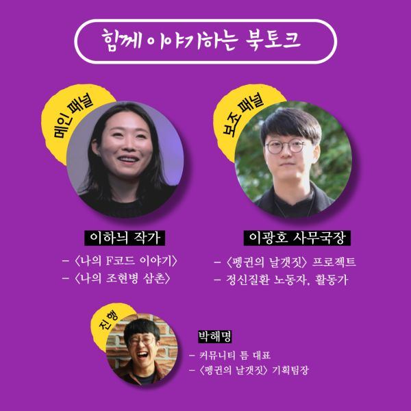
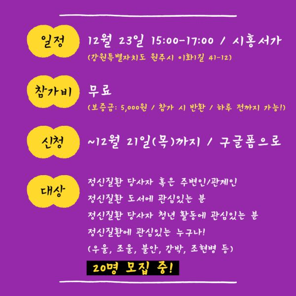
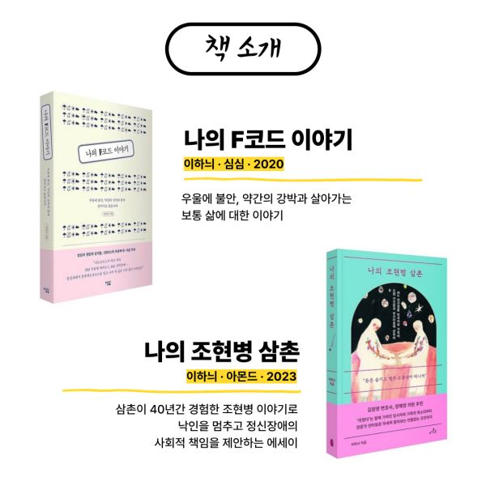
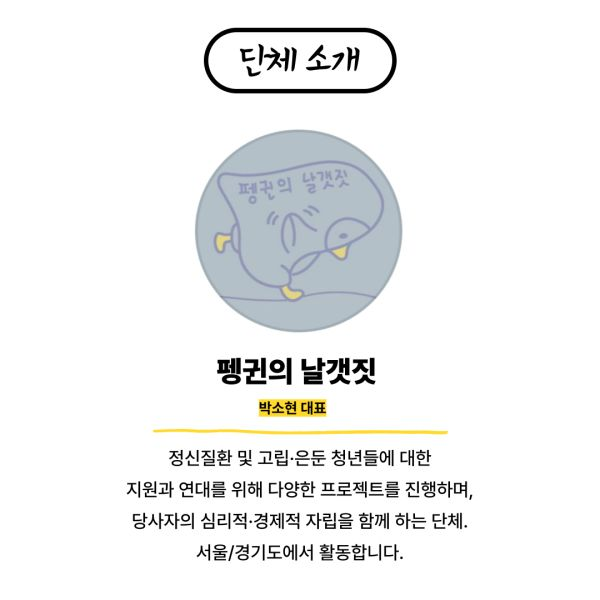
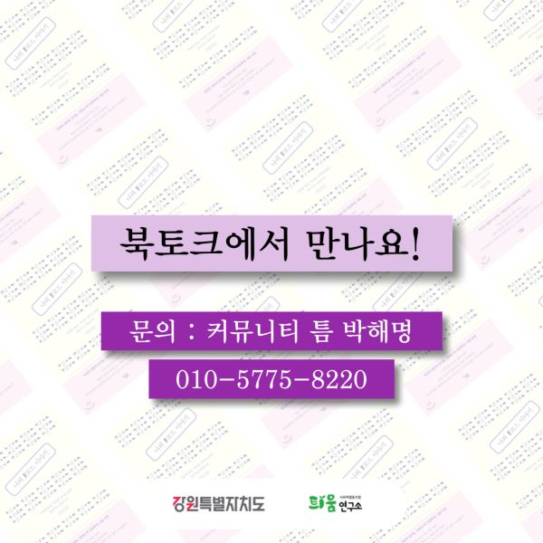

<도시에서 정신질환을 묻다> 이하늬 작가 북토크
* 일시: 2023년 12월 23일(토) 15:00-17:00
* 주제: "도시에서 정신질환을 묻다" 도시는 정신질환을 어떻게 품고 있을까요? 한 사람은 정신질환으로 어떻게 살아갈까요?
* 장소: 시홍서가(강원특별자치도 원주시 이화1길 41-12)
* 참여대상: ~20명
- 장애 당사자 혹은 주변인/관계인이라면?
- 장애/인권을 교육하는 담당자라면?
- 장애와 함께 하는 도시에 관심있는 시민이라면?
- 모임에 참여하고 싶은 누구나!
* 방식
- 일방적으로 듣는 북토크가 아닙니다. 참여자들의 시각과 느낌을 편안하게 나눕니다.
- 두 개의 발제로 시작합니다. 두 분의 참여자는 자신만의 관점에서 자유 발언이 가능합니다.
- 끝나고 모두 함께 느낌을 나눕니다. 정보와 내용이 아닌 마음과 느낌을 공유하고 집으로 향합니다.
* 패널 및 진행자
- 메인패널 / 이하늬 작가
<나의 F코드 이야기>
<나의 조현병 삼촌>
- 보조패널 / 이광호 사무국장
<펭귄의 날갯짓> 사무국장
정신질환 노동자, 활동가
- 진행 / 커뮤니티 틈 박해명